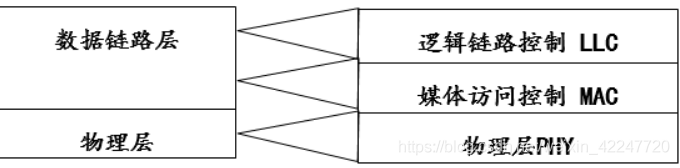
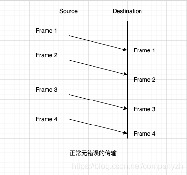
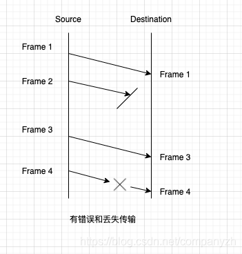
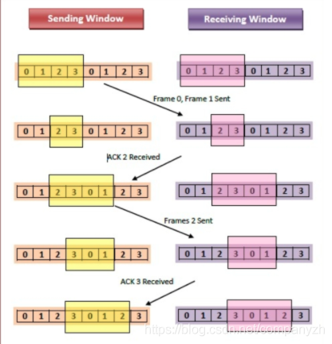
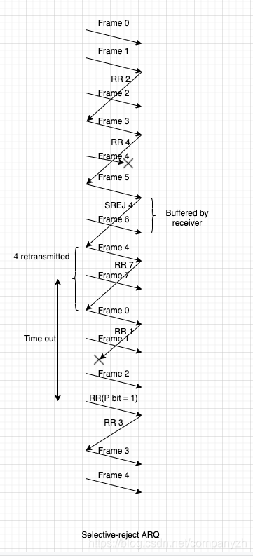
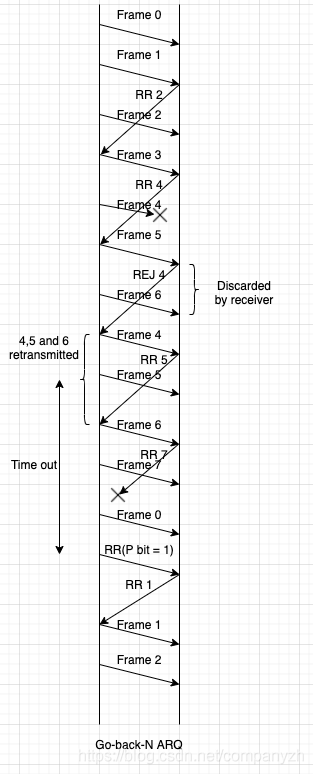
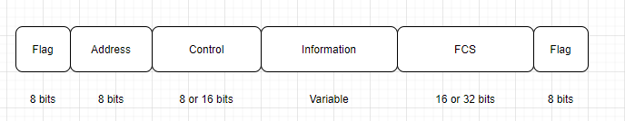
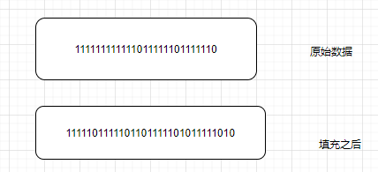
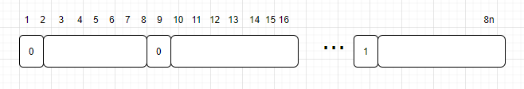
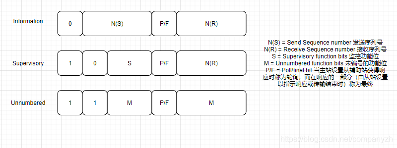

- 01 我应该站在谁的肩膀上 - OSI vs TCPIP模型.md.html
- 02 万丈高楼平地起- 物理层 + 数据链路层.md.html
- 03 OSI的灵魂就是我 - 网络层.md.html
- 04 要快还是要稳你说好了 - 传输层.md.html
- 05 是时候展现真正的技术了 - 应用层.md.html
- 06 重回小学课堂 - 二进制101.md.html
- 07 1+1 = 2吗？ - 二进制的计算.md.html
- 08 16进制又是个什么鬼？ - 16进制的讲解.md.html
- 09 我想有个家 - 什么是IP地址.md.html
- 10 我可是住二环的人 - IP地址的组成和分类.md.html
- 11 我已经没地方住了吗 - IPv6.md.html
- 12 向左还是向右 - IP路由.md.html
- 13 我能给你安全感 - TCP（一）.md.html
- 14 我那不为人知的秘密是什么 - TCP（二）.md.html
- 15 不问收没收到，就问快不快 - UDP.md.html
- 16 我为什么与众不同 - TCP高级篇（拥塞模型）.md.html
- 17 来，先看看我的家谱 - HTTP的身世.md.html
- 18 我都这么成功了，你却说我不行 - HTTP 的特点和缺点.md.html
- 19 我老了，让我儿子来吧 - HTTP2.md.html
- 20 稳重的大外甥 - HTTPS.md.html
- 21 HTTP的高级篇 - HTTPClient（Java）.md.html
- 22 想来我家，你自己查呀 - DNS.md.html
- 23 来的早，不如来得巧 - NAT.md.html
- 24 辛苦的邮政 - SMTP.md.html
- 25 你就是看不见我 - VPN.md.html
- 26 黑客的好帮手 - SSH.md.html
- 27 你可以得到我的心，却得不到我的人 - 物理安全设备.md.html
- 28 你怎么证明你就是你 - 身份验证和访问控制.md.html
- 29 我要怎么藏好我的考研资料 - 网络攻击（一）.md.html
- 30 我要怎么藏好我的考研资料 - 网络攻击（二）.md.html
- 31 如何保护我的考研资料 - 网络攻击防范.md.html
- 32 Linux网络安全 - 安全实战.md.html
- 33 结语.md.html
- 捐赠
02 万丈高楼平地起- 物理层 + 数据链路层
物理层
本来是想要一层层的来介绍。但是物理层确实没有太多你需要知道的内容。你可以理解为就是物理连接，（如果面试问你网线怎么做的话，转身就跑，这是要让你去干苦力呀）。还好TCP/IP模型也为我开了这个后门，把这两层放到了一起叫做数据链路层，所以我就可以冠冕堂皇的说我是按照TCP/IP来讲解的。
即使没有太多要讲的，还是要讲，存在即合理。说明物理层肯定是做了一些有作用的工作（只是作为工程师的你没有必要知道这些细节）。不然也就没有存在的必要了对不对，我们来试想一下，每一层是不是都有它的作用，物理层也必然如此。它的主要功能是什么呢？有以下几点。
- 硬件规格的定义：你能随便拿一根线就插在你的电脑上和网络连接吗？电脑和电脑之间连接用什么线呢？这些是不是都需要有规定，你能想到的常见硬件设备有什么？电缆，连接器，无线电收发器，网络接口卡和其他硬件设备的操作详细信息通常是物理层的功能。
- 编码和信号处理。其实我的本科主要学的就是信号处理(何为处理，就是数学计算，我那个时候高等数学玩的贼溜，甚至选了一门课就是去证明高等数学里面教的这些公式是不是对的。郭德纲说过，雅到极致就没饭吃了，这个东西你算的再好，不是做研究你觉得有必要吗？我当年要不就是读博士，要不就是读个硕士就工作了（别问我为什么不是本科就工作，因为我有追求呀，其实是本科毕业的我只会算高等数学）。其实我读博的话是去研究5G，但是我太俗气了，想赶紧工作。哈哈，有点扯远了，我就是为了告诉你们，这个东西知道就好了，你如果不是博士毕业的话，或者是做硬件的信号处理，这辈子基本不太会碰到这玩意。
- 数据收发，数据说白了是什么，就是一个个的信号。主要作用是传输比特流，（比特流就是0，1转化为电流，然后到了目的地时候在转换回来，但是错了怎么办呢，不好意思，物理层解决不了，它只能传输）
- 拓扑和物理网络设计：物理层也被认为是许多与硬件相关的网络设计问题的领域，例如LAN和WAN拓扑。
既然是物理层，就会涉及到实体，比如说双绞线呀，铜线呀，光纤呀，肯定不同的设备和材料传输的速度就是不同，但是这个专栏是针对程序员的，不是针对纯网络工程师，在这里就不多加赘述了。
数据链路层
我们上面提到的数据收发，只能传输，那出错了怎么办？谁来处理？正是因为可能出现的传输错误，数据接收者可能需要调节数据到达的速率, 处理同步以及接口交接的问题。所以需要一层来处理比如错误检测，流量控制，错误控制等，而这一层也就是我们要讲的数据链路层。
链路层还包括两小层（逻辑连接控制层(LLC)和媒体访问控制层也就是我们常说的MAC)。

MAC层在下面，我们先说。
媒体访问控制（MAC）子层提供用于访问传输介质的控制。它负责通过共享的传输介质将数据包从一个网络接口卡（NIC）移动到另一个。物理寻址在MAC子层进行。 MAC也在这一层进行处理。这是指用于为计算机分配网络访问权限并防止它们同时传输从而导致数据冲突的方法。常见的MAC方法包括以太网网络使用的载波侦听多路访问/冲突检测（CSMA / CD），AppleTalk网络使用的载波侦听多路访问/冲突避免（CSMA / CA）和令牌环和光纤使用的令牌传递分布式数据接口（FDDI）网络。这里就不展开讲解了。
然后在向上就是逻辑连接控制层。如IEEE-802 LAN规范所述，LLC子层的作用是控制各种应用程序和服务之间的数据流，并提供确认和错误通知机制。然后，LLC子层可以与许多IEEE 802 MAC子层进行对话。
下面我们来看一下这些功能
Flow Control(流量控制)
Flow Control是为了确保数据流的传输不会使接收方不堪重负。接收方通常会分配一些最大传输长度的数据缓冲区，当数据收到了，接收方必须要在传给上一层之前对一定的数据进行处理。 我们先来看一下正常的传输和有错误的是什么样子的。


那Flow Control是怎么来保证他的工作的？有什么算法来解决这些问题呢？
首先第一个叫做 Stop-and-Wait Flow Control(这些简单的英文我就不翻译了).
这是一个最简单的算法。从起点发送一个Frame（帧）到终点，如果收到了就返回一个Ack。起点会等待收到上一个Frame的ack才会去发送下一个Frame。当然如果这个Frame比较大的话，一般会分成多个小Frame。仔细想一下，你能想到是什么原因吗？
- 缓冲的大小是有限制的。
- 越大的文件越容易出错，越小的文件可以越早发现错误，当然也更容易重新传送。
- 还有一个就是在共用的媒介上，比如LAN, 你如果发送一个越大的文件，是不是占用的资源时间就越长，你好意思自己霸占着不放吗，当然会有一个限时，时间太长，就会被踢走。那是不是不管重试多少次都没用。
第二个算法是Sliding-Window Flow Control.
第一种算法一次只能传送一个Frame，很明显效率很低，是不是一次性多传送几个会快很多呢，就好像多线程一样（记住知识都是相通的）。

好像上图所示，比如一次性发送4个作为一个window。收到了两个，可以ack两个，然后起点再发两个，始终保持一个窗口有四个Frame在发送中。这个算法我们后面还会用到，而且面试中也会考Sliding Window的算法题（感兴趣的同学自己试一下）。
Error- Control(错误控制)
我们当然希望一切都是那么的美好，可以按照设定好的来走，但是发生错误是再正常不过的事情了。那错误发生了应该怎么办？重新发送就好了，就好像你点外卖，美团小哥给你弄撒了，那咋办，从做一份然后再送给你不就好了。这种方法叫做ARQ(automatic repeat request) 自动重发。
Stop-and-wait ARQ
这个就是基于Stop-and-wait Flow Control的算法。起点直到收到ack才会发下一个Frame. 当然终点收到Frame的时候会去检测出没出错误。通常会有两种错误。一种是到达终点的Frame已经损坏了。接收方通过某些方法知道出错了，别问我怎么知道，我就是知道。还是比如你点外卖，我收到外卖后不和外卖小哥交流。也不告诉外卖小哥外卖坏了，我就是傲娇，我直接把外卖扔了。那卖家怎么知道出错了呢。他有一个时间表，当到时间了，发现还没有买家留评价说收到，那就意识到出现问题了，卖家会重新发送一份外卖。
那第二种的错误可能是什么，仔细想一下。买家收到了外卖，也完好无损，但是当留评价的时候，美团当机了，或者买家自己的网断了，发不出去评价了。那卖家那边的timer到时间了，没有收到评价，卖家怎么办，它就要再发一份，那买家收到第二份之后怎么告诉卖家呢，他会留评价叫做ack0和ack1. 当ack1收到的时候，是不是就可以发送下一份外卖了。（这种情况只有Sliding-window flow control需要，自己想一下为什么)。 当然这种算法最大的优点就是简单，缺点是什么，还是没有效率。
Go-Back-N ARQ
这是基于滑动窗口流量控制的最常用的算法。当没有错误的时候，接收方会回应RR=receive ready。如果接收方发现Frame里面有错误比如FrameA，会回复一个消极的ack。也就是REJ=reject。 接收方会扔掉这个坏掉的Frame以及在那之后所有的Frame直到收到正确的FrameA。所以发送方，当他收到一个REJ的时候，必须要立即重新发送FrameA。
根据我们第一种算法，我们知道会有两种情况，一种是Damaged Frame(出错的帧），另一种是出错的RR。试想一下这个场景Frame (i - 1) 以及之前的所有Frame都没有问题，现在开始传送Frame i了，但是发生了错误。甚至这个错误可能导致接收方B 都没有感觉自己收到了这个Frame。
- 对于Damaged Frame a. 如果没有超时的问题，接收方首先收到了Frame i+1，发送回REJ给发送方，发送方必须要重新发送i以及所有i之后的Frame。
b. 超时发生了，那就是B什么都没有收到，所以既没有发送RR也没有发送REJ. 那双方僵持的时间长了，是不是就会发生超时，这时候发送方就像暖男一样，发送一个诚意满满的“道歉包”RR (包括玫瑰花也就是P bit 也就是1). B也不是小气的人，对吧，会回复一个RR 暗示A（我们和好了）你可以发送Frame i了。当A收到了，就会重新发送Frame i了。
- 对于Damaged RR
a. B 收到了Frame i，发送回RR(i + 1), 但是发生了错误（比如RR 4的话，说明所有的帧直到4都已经收到了），A很有可能会收到下一个不同的RR，可能是RR 5 可能是RR1,然后根据不同的RR来进行不同的处理 b. 如果A的timer超时了。效仿a2的情况。
- 对于Damaged REJ, 如果REJ丢了，情况和a2相同。
Seletive-Reject ARQ
这种算法中，唯一需要重新传的Frame是收到了一个SREJ的回复或者是超时，这种算法比上一种要更高效，因为减少了需要重传的量。具体可以看一下下面的图。


希望到这里，你没有看睡着呀，细心的朋友是不是发现我漏了什么，我讲了发生了错误怎么办？但是却没有讲怎么发现错误，对不对？哈哈，好，那让我们来看一下错误是怎么被发现的。首先我们要知道什么是错误，如果没有一个标准来定义对与错，那怎么去找呢。我们知道物理层传输的是比特也就是0和1，那么我要传送0，但是你收到了1，或者相反传送1，你收到了0，这就是错误。
常见的错误检测方式分为
- 奇偶校验（Parity Check）: 偶校验用于同步传输，奇校验用于异步传输
- 循环冗余校验（Cyclic Redundancy check）：这是最常用也是最有效的方式，利用的是XOR，也就是异或运算。这里我先卖个关子，在第二大章的二进制计算里面，会帮你们彻底弄明白这个运算。（算法面试也会考到哦）
Frame 帧
我们这一章从头到尾都在使用一个名字那就是Frame（帧），你肯定会想知道Frame的格式是什么。
记住一点（这很重要），你试想一下，在网络中传输的数据都是0和1，那怎么来区分哪个是哪个呢？这就是每一个packet或者说Frame，或者说IP等等都会有的一个东东，那就是header（头），这些header里包含着我是谁，我要去哪等等重要的信息。

Flag Filed
好我们来看一下Frame的头。从图上可以看到左右头和尾都有一个Flag的区域，这个Flag使用的是01111110来作为唯一的模式。在用户网络接口的两侧，接收器不断寻找Flag的序列来进行帧的同步。在接收帧的同时，会继续搜寻该序列以确定帧的结尾（这个结尾就是上面提到的那个标识01111110）。因为该协议允许存在任意位模式，你不能保证01111110这个模式不会被用到别的地方，也就是说在Information区域，可能会出现01111110的信息。（这里害怕你迷糊，来多说两句，这个01111110没有什么特殊的，只是选它作为标识，你可以选择00111100作为标识或者是二狗子作为标识。这只是一个定义，所以你不能限制这个标识不出现在其他的地方）。但问题是，如果这个01111110出现在别的地方，是不是就破坏了帧的同步，因为接收方只知道寻找01111110作为头和尾。那这个问题怎么解决呢？这里使用的解决方法叫做bit suffing
bit suffing 比特填充的首尾标志法

对于开始标志和结束标志之间的所有位，发送器在帧中每出现5个1后插入一个额外的0位。当出现五个1的模式时，第六位被检查。如果该位为0，则将其删除。如果第六位和第七位均为1，则发送方指示中止条件。通过使用位修饰，可以将任意位模式插入帧的数据字段。此属性称为数据透明属性。看一下下面这个例子。
Address Filed 地址字段标识

好看完了Flag位，下面是Address位。地址字段标识作为已发送或将要接收帧的辅助位。点对点链接不需要此字段，但为了统一起见，始终包含此字段。地址字段通常为8位长。但可以使用扩展格式（如图），其中实际地址长度为7位的倍数。每个八位位组的最左位是1或0，这取决于它是否是地址字段的最后一个八位位组。每个八位位组的其余7位构成地址的一部分。 1111111的单字节地址被解释为基本格式和扩展格式的全站地址。它用于允许主要节点广播帧以供所有辅助节点接收。
Control Filed 控制位标识
HDLC（High-level Data Link Control)定义了三种类型的Frame。每一种Frame都有自己独有的控制位标识。
信息帧 （Information Frames):携带要为用户传输的数据。另外，流和错误控制数据（根据arq机制）被附加在信息帧上。
管理帧 (Supervisory Frames) : 不使用搭载时提供arq机制。
无编号帧 （Unnumbered Frames)：提供补充的链接控制功能。

Inforamtion Field 消息标识
这个消息标识只在信息帧和一些无编号帧上存在。该字段可以包含任何位序列，但必须包含整数个八位位组。信息字段的长度是可变的，可以大到系统的最大值。
Frame Check Sequence Field 帧检查序列字段
帧检查序列字段是从帧的其余位（不包括标志）计算出的错误检测代码。
总结一下。数据链路层的主要功能就是以下几点。
- 处理比特传输发生的错误。
- 它确保数据流的传输速度不会使发送和接收设备不堪重负。
- 它允许将数据传输到网络层的第3层，并在其中进行寻址和路由。
我个人是希望你们可以把这些原理理解的很透彻，但是如果不能，也不用强求，面试的时候，可以和面试官把几种算法讲出来，哪种好，好在哪里就可以了，因为你的面试官也不一定会。好，我们下一节再见。
© 2019 - 2023 Liangliang Lee. Powered by gin and hexo-theme-book.